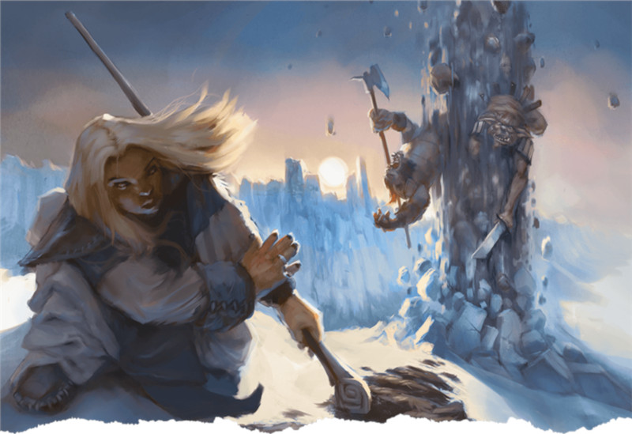

Voie des quatre éléments
À travers le perfectionnement rigoureux de leur corps et leur âme, les moine de la voie des quatre éléments obtiennent le pouvoir de manier les éléments primitifs de la nature pour l'attaque et la défense. Un moine plongé dans ces arts mystiques laisse ce pouvoir se mêler à son âme, canalisant l’énergie mystique, connu sous le nom de ki, hors de son propre corps pour façonner les éléments.
Capacités de la voie des quatre éléments
La tradition monastique d'un moine lui accorde généralement des manières supplémentaires d’utiliser ses points de ki pour créer des effets mystiques. La voie des quatre éléments est l'une des sous-classes les plus magiques du moine, utilisant le ki pour produire air, terre, feu et eau à partir de son énergie corporelle. Alors que la plupart des autres sous-classes du moine accordent des capacités distinctes aux niveaux 3, 6, 11 et 17, la voie des quatre éléments a seulement une capacité, Disciple des éléments, obtenue au niveau 3. La puissance élémentaire de cette capacité augmente aux niveaux 5, 6, 11, et 17.
Pour faire court, Disciple des éléments vous donne accès à des Disciplines élémentaires de plus en plus puissantes qui nécessitent de dépenser de plus en plus de ki pour les activer.
Avantages de la voie des quatre éléments
Certaines des capacités les plus intéressantes de la voie des quatre éléments sont ses Disciplines élémentaires qui ne reproduisent pas des sorts existants. Lien élémentaire, Crochets du serpent de feu, Poing de l’air, Façonnage de la rivière et Fouet d’eau sont des capacités passionnantes, thématiques et uniques qui font que cette sous-classe se démarque des autres sous-classes qui possèdent « un tiers de lanceur de sorts » comme le chevalier occulte et l'escroc arcanique.
Inconvénients de la voie des quatre éléments
Malheureusement, la voie des quatre éléments est non seulement une des sous-classes les plus faibles du moine, mais aussi une des plus faibles sous-classes du Player’s Handbook. Bien que son thème soit fort et évocateur, la voie des quatre éléments offre des options de combat limitées qui manquent de flexibilité et n'a pratiquement aucune capacité pouvant être utilisée efficacement pour explorer ou interagir avec d’autres créatures. Cette sous-classe gagne des sorts au même rythme qu'un guerrier chevalier occulte ou un roublard escroc arcanique. Cette progression fonctionne bien pour ces deux sous-classes, mais les moines de la voie des quatre éléments souffrent de deux problèmes majeurs : ils ont une sélection de sorts extrêmement limitée et ils ont à partager leur nombre restreint de points de ki entre les capacités principales de leur classe et les capacités élémentaires de leur sous-classe.
Comparons le niveau de flexibilité d'un moine de la voie des quatre éléments avec celui d'un guerrier chevalier occulte. Un chevalier occulte de niveau 17 peut apprendre jusqu'à 13 sorts de niveau 1 à 4 parmi les écoles d'évocation et d'abjuration de la liste de sorts du magicien, soit 34 sorts rien que dans le Player’s Handbook. De l’autre côté, la voie des quatre éléments permet d’apprendre des Disciplines élémentaires qui reproduisent les effets d’un seul sort (même si quelques unes ont des effets uniques). Un moine de niveau 17 peut apprendre 4 disciplines à choisir dans une liste de 17. C'est moins du tiers des sorts connus du chevalier occulte et à choisir dans une liste qui est deux fois moins grande.
Combiné au fait que le moine de la voie des quatre éléments doit choisir entre lancer des sorts et utiliser des capacités iconiques de moine comme Déluge de coups et Défense patiente, cela en fait une option regrettablement terne comparée aux autres sous-classes mêlant prouesses martiales et compétences magiques.
Si votre votre MD est d’accord, envisagez d'utiliser ces règles maison pour améliorer la voie des quatre éléments :
- Réduire le coût en ki de 2 (jusqu'à un minimum de 1) de toutes les Disciplines élémentaires. Cette réduction est appliquée après que vous ayez dépensé des points de ki supplémentaires pour augmenter le niveau du sort. Par exemple, la discipline Poing des quatre tonnerres vous permet de lancer vague tonnante pour 2 points de ki. Ce coût est réduit à 1. Lancer le sort au niveau 2 augmente le coût en ki à 3, mais cela coûte toujours 1 point de ki après la réduction.
- Au niveau 3, vous apprenez la discipline Lien élémentaire normalement ainsi que deux autres disciplines de votre choix (au lieu d’une seule).
- Vous apprenez deux nouvelles disciplines aux niveaux 6, 11 et 17 (au lieu d’une seule) et pouvez remplacer n’importe laquelle des disciplines connues par une autre pour laquelle vous avez le niveau requis lorsque vous montez de niveau dans cette classe.
- Vous pouvez également apprendre deux sorts mineurs de votre choix parmi la liste suivante : aspersion d’acide, trait de feu, façonnage de la terre, flammes, rayon de givre et poigne électrique. Quand vous gagnez un niveau dans cette classe, vous pouvez remplacer un de ces sorts mineurs par un autre de cette liste au lieu de remplacer une Discipline élémentaire par une autre. Si vous avez d’autres sources comme le Xanathar’s Guide to Everything ou l’Elemental Evil Player’s Companion, et avec la permission de votre MD, vous pouvez y choisir d’autres sorts mineurs qui infligent des dégâts d’acide, de froid, de feu, de foudre ou qui ont un thème élémentaire.
Exemple de personnage
Si vous jouez un moine de niveau 1, vous devriez choisir une race qui améliore la Dextérité, la Constitution ou la Sagesse (idéalement deux des trois). La Dextérité rendra vos attaques plus fortes et plus précises, la Constitution vous accordera plus de points de vie donc vous permettra de rester plus longtemps en première ligne, et la Sagesse augmentera votre CA et empêchera les ennemis de résister à vos capacités martiales. Les elfes des bois gagnent un bonus à la fois en Dextérité et en Sagesse, faisant d'eux des combattants martiaux agiles et rusés. De même, les halfelins robustes gagnent un bonus à la fois en Dextérité et en Constitution, ce qui en fait des personnages agiles mais résistants. Et, comme toujours, les humains gagnent soit un petit bonus dans toutes les caractéristiques, soit un don en prenant la variante de l'humain, ce qui les rend flexibles. Si vous jouez la campagne Princes of the Apocalypse ou utilisez l'Elemental Evil Player's Companion, vous pouvez jouer un genasi qui possède un fort thème élémentaire de base. Les genasis de l'eau ont un bonus en Sagesse et les genasis de l'air ont un bonus en Dextérité, ce qui en fait des choix solides pour jouer un moine.
Comme d'habitude, l'historique de votre personnage est à votre convenance. Vous pouvez créer un personnage plus unique en choisissant des historiques inhabituels comme celui de sage, représentant un ancien étudiant des arcanes qui a embrassé un train de vie monastique et a trouvé un nouvel usage pour ses connaissances des éléments. Ou vous pouvez créer un personnage plus typique en choisissant l’historique d’ermite, représentant quelqu'un ayant vécu en contemplation solitaire des secrets du multivers pendant des années.
Pour l'équipement, choisissez une épée courte ou toute autre arme de moine (une arme avec la propriété polyvalente comme un bâton ou une lance est un très bon choix car vous pouvez utiliser un plus grand dé de dégâts en la maniant à deux mains tout en utilisant votre action bonus pour effectuer une attaque « à mains nues » avec vos pieds).
Vous ne choisissez pas votre sous-classe avant le niveau 3, donc utiliser le temps passé aux niveaux 1 et 2 pour décider si la voie des éléments est vraiment le bon chemin pour vous. Aimez-vous l'idée d'être un maître des quatre éléments ? Ressentez-vous un besoin de plus d'arts martiaux dans votre partie et préférez être un moine de la voie de la paume ? Ou vous rendez-vous compte que la discrétion est plus votre style et préféreriez-vous essayer à la voie de l'ombre ?
Disciplines élémentaires
Avec vos options si limitées, choisir votre Discipline élémentaire préférée peut être compliqué. Au niveau 3, vous ne connaissez que deux disciplines : l'équivalent d'un sort mineur Lien élémentaire et une autre de votre choix. Vos options au niveau 3 sont :
- Crochets du serpent de feu (unique)
- Poing de l’air (unique)
- Ruée des esprits du vent (reproduit bourrasque)
- Façonnage de la rivière (unique)
- Frappe incandescente écrasante (reproduit mains brûlantes)
- Fouet d’eau (unique)
- Poing des quatre tonnerres (reproduit vague tonnante)
Crochets du serpent de feu est l’un des choix offensifs supérieurs alors que Façonnage de la rivière peut s’avérer utile lors de l’exploration de zones naturelles pleines d’eau ou de glace. Fouet d’eau est un excellent choix aussi avec ses gros dégâts mono cible et sa capacité à influer sur la position d’une autre créature sur le champ de bataille.
Quand vous montez en niveau, d'autres options s'offrent à vous, mais la possibilité de dépenser des points de ki supplémentaires pour augmenter les dégâts de disciplines de bas niveau ne devrait pas être sous-estimé. Crochets du serpent de feu est particulièrement utile puisque ses dégâts bonus et son allonge s'appliquent à toutes les attaques que vous faites dans le tour.
Dons
Au niveau 4, vous avez le choix entre Amélioration de caractéristiques et un don. Choisir Amélioration de caractéristiques permet d'augmenter une caractéristique de +2 (comme augmenter votre Sagesse de 16 à 18) ou augmenter deux caractéristiques de +1 (comme augmenter votre Sagesse de 15 à 16 et votre Constitution de 13 à 14). Augmenter vos caractéristiques vous rend meilleur dans un large éventail de choses. Par exemple, augmenter votre Sagesse diminue les chances que vos ennemis résistent à vos sorts, >améliore votre Classe d'Armure et augmente vos chances de réussir vos jets de Sagesse.
Les dons, d’un autre côté, vous donnent une capacité spéciale qui pourrait être plus utile dans des circonstances particulières contrairement à l'amélioration générale apportée par Amélioration de caractéristique. La Dextérité et la Sagesse sont vos caractéristiques les plus importantes car elles augmentent toutes deux votre Classe d'Armure et, respectivement, la puissance ainsi que la précision de vos attaques et la puissance de vos compétences de ki. La Constitution est aussi importante pour un combattant au corps à corps comme le moine. Ce besoin d'augmenter plusieurs caractéristiques ne vous laissera pas forcément la place d’incorporer des dons lors de l'évolution de votre personnage mais vous pourriez quand même avoir envie de choisir un don pour coller à votre concept. Vous pouvez choisir n’importe quel don mais certains seront plus utiles à votre personnage que d’autres.
Adepte des éléments (feu). Bien que ce don ne fonctionne pas avec une interprétation stricte des règles, un MD transigeant pourra vous autoriser à appliquer ce don à vos Disciplines élémentaires, comme Crochets du serpent de feu. Si oui, cela peut être puissant. Si non, oubliez ce don.
Tueur de mages. Si vous vous retrouvez souvent à affronter de nombreux lanceurs de sorts dans votre campagne, votre multitude d’attaques et votre grande mobilité font de vous un tueur de mages de qualité.
Mobile. Les moines sont déjà très mobiles grâce à leur capacité Déplacement sans armure, mais être capable d’attaquer tout en évitant les attaques d’opportunités alors que vous vous vous élancer à travers le champ de bataille est difficilement refusable.
Résistant (Sagesse). Si vous jouez une campagne de bas niveau, ce don est incroyable. Gagner la maîtrise des jets de sauvegarde de Sagesse et augmenter votre propre Sagesse de 1 est génial. Cependant, si votre campagne vous jusqu'au niveau 14 et plus, ce don devient un poids mort puisque vous gagnez la maîtrise de tous les jets de sauvegarde avec votre capacité Âme de diamant au niveau 14.
Discret. Bien que vous ne serez jamais aussi discret qu'un moine de la voie de l’ombre, ce don vous aidera à lancer des attaques surprises foudroyantes.

Basé sur un article de James Haeck, traduit par Nathyouss